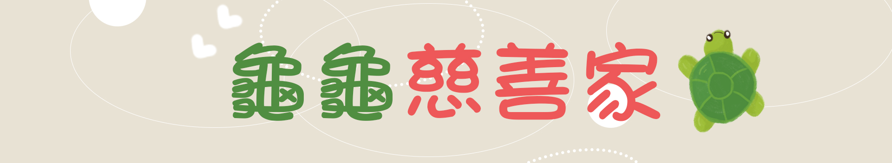

最後龜龜去了哪裡呢?
-
每年都舉辦這麼盛大的活動，而每年都有幾隻這麼大的米龜，祈求到這些米龜的人又是怎麼處理掉的呢?
想必大家都一定很好奇吧，這些祈求到的米龜這麼大自己也吃不完，所以大多數人都是把米龜分發給鄉里鄰居或是捐給弱勢群族，絕對沒有浪費或是丟棄的行為喔，不然可是會被雷公打屁股呢！
這麼大隻的烏龜被拆解後，就由貨車運送到各澎湖弱勢的地區進行發放
像是龍門觀音宮的米龜，每年都用於濟助馬公的弱勢家戶及跟低收入戶等等，而謝氏家族的謝媽媽更是我們慈善的代表。
謝媽媽說過只要有能力能幫就盡量幫，還說了曾經他阿公有許了一個大願望，如果他的孫子生的病可以痊癒的話，他就不再殺生，謝媽媽聽到以後就想，烏龜也跟人一樣是生命，能不要殺生最好，讓我們家庭平安有福氣。
當然除了澎湖的地區的弱勢群族，也有來自高雄或是台南來拿這隻平安龜的米包唷!
希望吃了大家都福氣滿滿，平安順利呢!
-
致疊龜師傅：
非常感謝有這一些疊龜師傅在，我們才能看得這文化的精神以及人心善良的一面，在早期以糕仔粉加上糖水做的肪片龜為多，但隨著時代的變化，米飯已經變成現在人的主食，隨後用米去疊出來的烏龜也越來越多，而疊龜的過程也是不簡單的，但是時代進步的太快，加上人口老化、年輕人外流的情況下，在澎湖能疊龜的人沒有很多，這項技術如果沒有人繼承的話，那未來不只是沒有米龜，有可能乞龜這項傳統習俗也會被現今的社會給慢慢地遺忘吧。